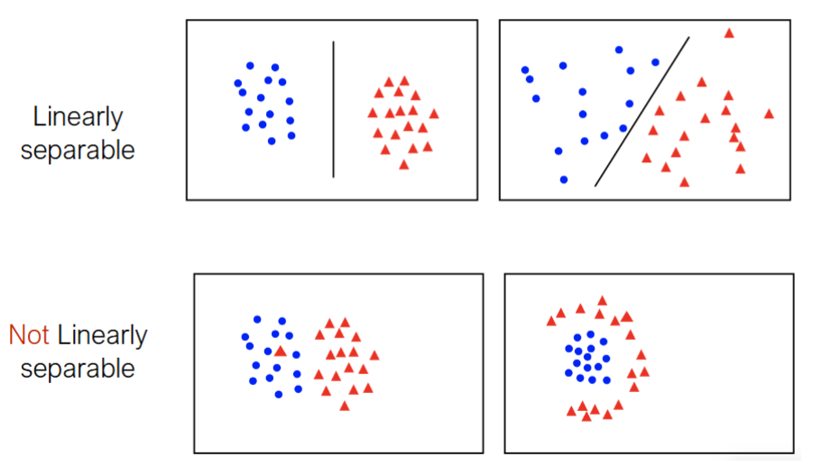
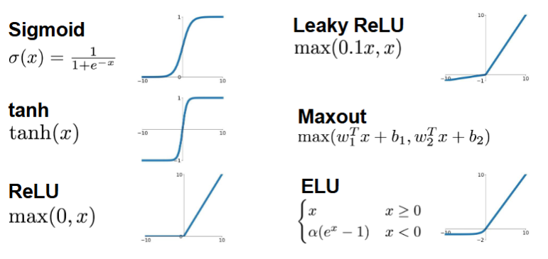

现代AI算法导论
第一讲 AI 的背景和经典技术
- 什么才算是人工智能？
- 不是越像人越好，因为人会犯错误
- AI 是设计能够针对目标合理行动的计算机算法。一个例子：导航。
- 智能体感知环境，根据获得的信息采取行动，行动又会改变环境。
- 要素：状态，动作，转移，代价，目标
- 举例：CSP（类似数独的约束问题），概率推理，机器学习
本节常见符号：
| 符号 | 解释 |
|---|---|
| $x_i,y_i,\hat y_i$ | 第 $i$ 条样本的输入、正确答案、模型预测 |
| $n,d$ | 样本数量、每条样本有多少个输入特征 |
| $\theta$ | 可训练参数矩阵(向量)；可以包含权重 $w,W$ 和偏置 $b$ |
| $f_\theta(x)$ | 用参数 $\theta$ 的模型处理输入 $x$ |
| $\|x-c\|_2^2$ | 平方距离 |
| $\arg\min_\theta J(\theta)$ | 找出让 $J$ 最小的参数；结果是参数，不是最小损失值 |
| $\mathbb E$ | 按发生概率加权的平均 |
| $\eta$ | 学习率，控制每次更新幅度 |
| $\leftarrow$ | 程序赋值 |
1.0 训练一个模型：损失、泛化
Loss&Generalization
$\ell$ 就是损失函数，常见以下几种：
| 损失 | 公式 | 解释 |
|---|---|---|
| 平方损失 | $(\hat y-y)^2$ | 大错误罚得特别重。和除以n就得到MSE均方误差。 |
| 绝对损失 | $\lvert \hat y-y\rvert$ | 错多少罚多少，不让正负错误抵消 |
| 零一损失 | $\mathbf1[\hat y\ne y]$ | 分类错了记 1，对了记 0；不表示“差一点”和“差很多” |
| 对数损失 | $-\log p_y$ | $p_y$ 是模型给正确类别的概率；给正确答案的概率越小，惩罚越大 |
显然泛化指模型在没见过的新数据上，仍然能做好任务的能力。
可能出现的问题：
- 欠拟合：规则太简单，或训练不足，练习题和新题都做不好。
- 过拟合：学到了训练数据的偶然细节，练习题表现很好，新题明显变差。模型更复杂会增加这种可能性，但并非必然过拟合。
因此，我们通常把已有数据分开使用：
- 训练集：用于调整模型参数。
- 验证集：用于比较模型、调整训练方式或结构。
- 测试集：在模型确定后，用于评估它面对未参与训练和选择的数据时的表现。
评估我们的模型：
| 指标 | 公式 | 解释 |
|---|---|---|
| MAE | $\frac1n\sum_i\lvert e_i\rvert$ | 平均错多少，单位与答案相同 |
| MSE | $\frac1n\sum_i e_i^2$ | 平均平方误差，更强调大错误 |
| RMSE | $\sqrt{\mathrm{MSE}}$ | 把平方单位还原，仍然强调大错误 |
| 平均有符号误差 | $\frac1n\sum_i e_i$ | 看整体偏高还是偏低；正负抵消，所以不是总体准确度 |
| MAPE | $\frac{100\%}{n}\sum_i\lvert e_i/y_i\rvert$ | 平均相对误差；$y_i=0$ 时该式不可用，接近 0 也很敏感 |
| $R^2$ | $1-\frac{\sum_i e_i^2}{\sum_i(y_i-\bar y)^2}$ | 和“总猜本组答案的均值”相比改善多少；可小于 0，分母为 0 时此式无定义 |
第二讲 MachineLearning & NeuralNetwork (MLNN)
取舍：限于篇幅，以概念为主，对于具体的神经网络设计等涉及较少。
- 机器学习
- 无监督学习：主要用于发现数据的规律
- 聚类(Clustering)
- 降维(Dimentionality Reduction)
- 异常检测(Anomaly Detection)
- 监督学习：学习产生一个模型(函数)
- 回归(Regression, 样本连续)
- 分类(Classification 样本离散)
- 强化学习 (ReinforcementLearning)：奖励与惩罚->最像人类
- 多任务学习：同时处理多个任务的数据
- 深度学习：通过神经网络拟合复杂函数，并借助大量样本和优化来学习参数
- 神经架构搜索(NeuralArchitectureSearch, NAS)
- 参数学习：学习连接上的参数
- 架构学习：学习网络应该如何连接(层、模块、组合)
- 进化搜索：生成网络$\to$分别训练$\to$筛选结构$\to$调整结构，D.C. al Fine
- 无监督学习：主要用于发现数据的规律
- 神经网络
- CNN
- RNN
- ...
2.1 K-means
它的意思是：把每个数据点到它所属类别中心的距离加起来，K-means 尝试让这个总和尽可能小。
公式里的符号
假设我们有一堆数据点，想把它们分成 $K$ 类：
- $x_i$：第 $i$个数据点。例如，一个人的身高和体重可以组成一个二维点。
- $c_k$：第$k$ 类的中心，也叫聚类中心或均值。
- $a_i$：第$i$ 个点被分到的类别编号，取值为 $1,\ldots,K$。
- $c_{a_i}$：第 $i$ 个点所属类别的中心。比如 $a_i=2$，那么它对应的中心就是 $c_2$。
- $\operatorname{dist}(x_i,c_{a_i})$：点 $x_i$ 与其所属中心之间的距离。
- $\sum_i$：把所有数据点对应的距离加起来。
- $\phi$：衡量当前聚类结果的一个数，越小说明各点总体上越靠近各自的中心。
$\operatorname{dist}$ 表示距离，标准 K-means 通常采用欧氏距离的平方：
其中 $n$ 是数据点的数量，$\min$ 表示寻找使目标值尽可能小的分类方式和中心位置。
如果 $x_i=(x_{i1},x_{i2})$，中心 $c_{a_i}=(c_1,c_2)$，那么平方欧氏距离是：
例如点 $(2,3)$ 到中心 $(1,1)$ 的平方距离是：
这个公式怎么用？
通过反复交替执行两步，来降低上面的目标值：
第一步：固定中心，重新分组。
每个点被分给离它最近的中心：
这里的 $\arg\min$ 表示“使距离最小的那个 $k$”。例如，一个点离第 2 个中心最近，就令 $a_i=2$。
第二步：固定分组，重新计算中心。
对每个类别，把分到这一类的所有点取平均：
然后重复“分给最近的中心 → 重新计算平均值”，直到点的类别不再变化。 这两步各自都不会让平方距离总和变大：第一步让每个点选择最近的中心，第二步让每类的中心移动到该类点的平均位置。不过，最终结果不一定是全局最优；初始中心选得不同，结果也可能不同。
import random
def kmeans(points, k, max_iter=300, random_state=None):
"""
points: 点的列表，例如 [[1, 1], [2, 3], [8, 9]]
k: 想分成的组数
返回 k 个中心，每个中心是一个坐标列表。
"""
if not points or not 1 <= k <= len(points):
raise ValueError("points 不能为空，且 k 必须在 1 和点数之间")
dimension = len(points[0])
if dimension == 0 or any(len(point) != dimension for point in points):
raise ValueError("所有点必须有相同且非零的维度")
if max_iter < 1:
raise ValueError("max_iter 必须至少为 1")
rng = random.Random(random_state)
# 随机选择 k 个点作为初始中心
centers = [list(point) for point in rng.sample(points, k)]
previous_labels = None
for _ in range(max_iter):
labels = []
# 1. 对每个点，找距离它最近的中心
for point in points:
distances = [
sum((point[d] - center[d]) ** 2 for d in range(dimension))
for center in centers
]
closest_center = min(range(k), key=lambda j: distances[j])
labels.append(closest_center)
# 分组不变，停止
if labels == previous_labels:
break
# 2. 每个中心更新为对应组中所有点的平均值
for j in range(k):
group = [
point for point, label in zip(points, labels)
if label == j
]
if group:
centers[j] = [
sum(point[d] for point in group) / len(group)
for d in range(dimension)
]
previous_labels = labels
return centers2.2 线性回归与最小二乘法
Regression
模型学习到一个拟合函数，设计奖惩函数，根据近似程度做出反馈。 假设模型得到函数：
假设我们有 $n$ 组历史数据：
对于第 $i$ 组数据，预测误差是：
损失：
使得损失最小的过程就是最小二乘法：
求最小二乘解： 对原函数求导：$\nabla L(\theta)=0$ 矩阵可逆的情况下：一种闭式解
2.3 分类与线性分类器
Classification&LinearClassifiers
训练数据可以写成$(f_1,y_1),(f_2,y_2),\ldots,(f_n,y_n)$ 这里：
- $f_i$ 是第 $i$ 个样本的特征，即用来判断的信息。例如邮件的特征可以包括有没有某些词、链接数量等。
- $y_i$ 是这个样本的标签，例如“垃圾邮件”或“正常邮件”。
- $n$ 是训练样本的数量。
学习算法利用这些带标签的数据，得到一个分类模型。将来遇到一封没有见过的新邮件时，模型根据它的特征预测标签。
对于最简单的二分类情况（正常邮件/垃圾邮件），标签显然可以简记为$\{-1,1\}$,此时使用线性分类器 （$\theta$是权重向量，f是输入的特征向量）
$h(f)$的正负就代表了数据点的类别。 同样的，任务就是通过机器学习找到最佳的$\theta$和$b$
2.4 神经网络
NeuralNetwork
可是我们会遇到线性分类器无法处理的情况

对于后两个图的情况，我们就需要应用非线性变换去解决。神经网络通过多层计算和非线性激活函数，适合学习非线性的复杂模型。
仍然以这个分类举例，一个神经元可以是：
- g是激活函数，例如正负值做区分。但是它更经常用来引入非线性，例如它还有以下这些种类

- 进一步，神经网络由输入层、隐藏层、输出层组成。
卷积神经网(CNN)
ConvolutionalNeuralNetwork
- 局部连接(滤波器)+参数共享
- 2012年，FeiFei Li创办的ILSVRC大赛中AlexNet凭借着一张极其精巧的CNN使得图片识别模型能力得到大幅提升。
循环神经网(RNN)
RecurrentNeuralNetwork
- 拥有“缓存”，关注顺序，传递状态
- RNN 必须一步步往前算，长距离信息容易衰减、也没法并行；LLM所用的Transformer 网络用自注意力让任意两个位置直接相连，代价是计算量随长度平方增长。
例如句子“我昨天去图书馆借了一本书。”被RNN视为一个序列，要理解后面的“书”，前面的“图书馆”“借”都可能有帮助。处理时间序列时也是一样：预测下一个时刻，可能需要参考之前发生过什么。
RNN 的思路是：每处理一个新输入，同时参考前一步留下的隐藏状态。
一个简化公式是：
其中：
- $x_t$：第 $t$ 步的新输入，例如当前的词。
- $h_{t-1}$：上一步的隐藏状态，携带之前序列的信息。
- $h_t$：结合当前输入和之前状态后得到的新状态。
- $W_x,W_h,b$：需要训练的参数。
© 2026 x1shang。除另有注明外，本笔记中的原创内容采用 知识共享署名 4.0 国际许可协议（CC BY 4.0）授权。转载或改编时，请合理署名、附上原文及协议链接，并标明修改情况。第三方材料的权利归其各自权利人所有。